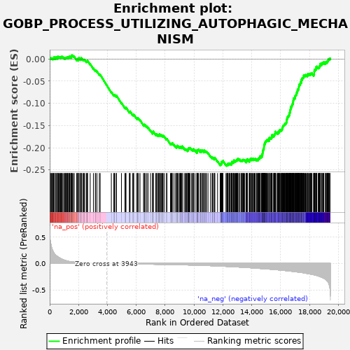
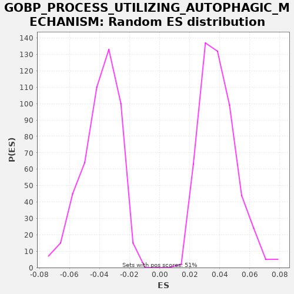

| | | Dataset | X_enriched_genes copy |
| Phenotype | NoPhenotypeAvailable |
| Upregulated in class | na_neg |
| GeneSet | GOBP_PROCESS_UTILIZING_AUTOPHAGIC_MECHANISM |
| Enrichment Score (ES) | -0.24108014 |
| Normalized Enrichment Score (NES) | -6.1423364 |
| Nominal p-value | 0.0 |
| FDR q-value | 0.0 |
| FWER p-Value | 0.0 |
Table: GSEA Results Summary

Fig 1: Enrichment plot: GOBP_PROCESS_UTILIZING_AUTOPHAGIC_MECHANISM
Profile of the Running ES Score & Positions of GeneSet Members on the Rank Ordered List
| SYMBOL | RANK IN GENE LIST | RANK METRIC SCORE | RUNNING ES | CORE ENRICHMENT | | 1 | GAPDH | 14 | 0.510 | 0.0013 | No |
| 2 | HSPA8 | 26 | 0.465 | 0.0027 | No |
| 3 | DYNLL1 | 83 | 0.366 | 0.0018 | No |
| 4 | PHB2 | 128 | 0.310 | 0.0015 | No |
| 5 | VPS28 | 157 | 0.278 | 0.0020 | No |
| 6 | TSPO | 225 | 0.236 | 0.0005 | No |
| 7 | CHMP2A | 239 | 0.231 | 0.0019 | No |
| 8 | PARK7 | 287 | 0.202 | 0.0014 | No |
| 9 | STUB1 | 301 | 0.193 | 0.0027 | No |
| 10 | FUNDC2 | 307 | 0.191 | 0.0045 | No |
| 11 | CDC37 | 404 | 0.157 | 0.0014 | No |
| 12 | STBD1 | 428 | 0.153 | 0.0022 | No |
| 13 | MVB12A | 432 | 0.152 | 0.0041 | No |
| 14 | TMEM59 | 479 | 0.142 | 0.0037 | No |
| 15 | HAX1 | 547 | 0.130 | 0.0022 | No |
| 16 | KAT8 | 559 | 0.128 | 0.0036 | No |
| 17 | LAMTOR2 | 562 | 0.127 | 0.0055 | No |
| 18 | EXOC7 | 611 | 0.118 | 0.0050 | No |
| 19 | TOMM40 | 665 | 0.108 | 0.0043 | No |
| 20 | CDK5 | 693 | 0.104 | 0.0049 | No |
| 21 | POLDIP2 | 755 | 0.094 | 0.0037 | No |
| 22 | HSP90AA1 | 790 | 0.089 | 0.0039 | No |
| 23 | TOMM20 | 806 | 0.087 | 0.0051 | No |
| 24 | GABARAP | 837 | 0.082 | 0.0055 | No |
| 25 | ADPRH | 884 | 0.076 | 0.0051 | No |
| 26 | VPS16 | 969 | 0.067 | 0.0027 | No |
| 27 | HMGB1 | 1016 | 0.063 | 0.0023 | No |
| 28 | HTRA2 | 1058 | 0.059 | 0.0022 | No |
| 29 | SIRT2 | 1095 | 0.055 | 0.0023 | No |
| 30 | MAP1LC3B | 1114 | 0.054 | 0.0034 | No |
| 31 | TEX264 | 1165 | 0.049 | 0.0028 | No |
| 32 | CSNK2B | 1187 | 0.048 | 0.0037 | No |
| 33 | DDRGK1 | 1243 | 0.044 | 0.0028 | No |
| 34 | LAMTOR5 | 1248 | 0.043 | 0.0046 | No |
| 35 | DAPK3 | 1314 | 0.039 | 0.0032 | No |
| 36 | TBC1D17 | 1344 | 0.038 | 0.0037 | No |
| 37 | TRAPPC4 | 1349 | 0.038 | 0.0055 | No |
| 38 | CTSA | 1377 | 0.036 | 0.0061 | No |
| 39 | EEF1A1 | 1449 | 0.033 | 0.0044 | No |
| 40 | RRAGD | 1500 | 0.031 | 0.0037 | No |
| 41 | DAPL1 | 1505 | 0.031 | 0.0056 | No |
| 42 | FIS1 | 1516 | 0.030 | 0.0070 | No |
| 43 | NPRL2 | 1529 | 0.030 | 0.0084 | No |
| 44 | EMC6 | 1571 | 0.029 | 0.0083 | No |
| 45 | LAMP3 | 1643 | 0.026 | 0.0066 | No |
| 46 | ATG10 | 1698 | 0.025 | 0.0057 | No |
| 47 | BNIP3 | 1872 | 0.021 | -0.0014 | No |
| 48 | ATG16L2 | 1914 | 0.020 | -0.0015 | No |
| 49 | RMC1 | 1915 | 0.020 | 0.0005 | No |
| 50 | KLHL22 | 1992 | 0.018 | -0.0015 | No |
| 51 | VPS36 | 2009 | 0.018 | -0.0003 | No |
| 52 | VPS37D | 2027 | 0.018 | 0.0008 | No |
| 53 | TRIM17 | 2029 | 0.018 | 0.0028 | No |
| 54 | CALCOCO2 | 2131 | 0.016 | -0.0005 | No |
| 55 | PINK1 | 2171 | 0.016 | -0.0006 | No |
| 56 | MTDH | 2178 | 0.015 | 0.0011 | No |
| 57 | TCIRG1 | 2190 | 0.015 | 0.0026 | No |
| 58 | LAMTOR4 | 2290 | 0.014 | -0.0006 | No |
| 59 | VPS51 | 2348 | 0.013 | -0.0016 | No |
| 60 | CAPNS1 | 2380 | 0.013 | -0.0012 | No |
| 61 | BOK | 2424 | 0.012 | -0.0015 | No |
| 62 | RUFY4 | 2540 | 0.011 | -0.0055 | No |
| 63 | HDAC10 | 2577 | 0.010 | -0.0054 | No |
| 64 | RUBCNL | 2614 | 0.010 | -0.0053 | No |
| 65 | VDAC1 | 2620 | 0.010 | -0.0035 | No |
| 66 | UBXN6 | 2808 | 0.008 | -0.0114 | No |
| 67 | PJVK | 3029 | 0.006 | -0.0209 | No |
| 68 | WASHC1 | 3162 | 0.005 | -0.0259 | No |
| 69 | GFAP | 3184 | 0.005 | -0.0250 | No |
| 70 | TMEM150B | 3276 | 0.004 | -0.0277 | No |
| 71 | MTMR14 | 3440 | 0.003 | -0.0343 | No |
| 72 | TMEM208 | 3497 | 0.003 | -0.0353 | No |
| 73 | ATG101 | 4273 | -0.002 | -0.0741 | No |
| 74 | MAPK15 | 4443 | -0.003 | -0.0810 | No |
| 75 | TMEM74 | 4487 | -0.003 | -0.0813 | No |
| 76 | ITGB4 | 4506 | -0.003 | -0.0802 | No |
| 77 | TRIM6 | 4614 | -0.004 | -0.0838 | No |
| 78 | GATA4 | 4629 | -0.004 | -0.0825 | No |
| 79 | SRC | 4972 | -0.005 | -0.0986 | No |
| 80 | KDR | 5213 | -0.007 | -0.1092 | No |
| 81 | FUNDC1 | 5276 | -0.007 | -0.1104 | No |
| 82 | LEPR | 5282 | -0.007 | -0.1087 | No |
| 83 | SPATA18 | 5521 | -0.008 | -0.1192 | No |
| 84 | PRKAG3 | 5552 | -0.008 | -0.1188 | No |
| 85 | WDFY4 | 5573 | -0.008 | -0.1178 | No |
| 86 | FBXL2 | 5754 | -0.009 | -0.1253 | No |
| 87 | NOD2 | 5810 | -0.009 | -0.1262 | No |
| 88 | KLHL3 | 5822 | -0.009 | -0.1247 | No |
| 89 | TOLLIP | 6019 | -0.010 | -0.1331 | No |
| 90 | MAPK3 | 6087 | -0.011 | -0.1346 | No |
| 91 | SYNPO2 | 6094 | -0.011 | -0.1329 | No |
| 92 | TRIM14 | 6154 | -0.011 | -0.1340 | No |
| 93 | ATG3 | 6260 | -0.011 | -0.1375 | No |
| 94 | RGS19 | 6503 | -0.012 | -0.1482 | No |
| 95 | SRPX | 6559 | -0.012 | -0.1491 | No |
| 96 | SEC16B | 6563 | -0.012 | -0.1472 | No |
| 97 | MAPT | 6644 | -0.013 | -0.1494 | No |
| 98 | TPCN2 | 6735 | -0.013 | -0.1522 | No |
| 99 | SNX32 | 6818 | -0.014 | -0.1545 | No |
| 100 | UFC1 | 6988 | -0.015 | -0.1614 | No |
| 101 | TOMM7 | 7130 | -0.015 | -0.1668 | No |
| 102 | TRIM5 | 7141 | -0.015 | -0.1653 | No |
| 103 | TRIB3 | 7172 | -0.015 | -0.1648 | No |
| 104 | TBC1D25 | 7178 | -0.015 | -0.1631 | No |
| 105 | TRIM38 | 7343 | -0.016 | -0.1697 | No |
| 106 | ATP6V0C | 7403 | -0.016 | -0.1708 | No |
| 107 | TMBIM6 | 7411 | -0.016 | -0.1692 | No |
| 108 | ATP6V1E2 | 7500 | -0.017 | -0.1718 | No |
| 109 | EPM2A | 7525 | -0.017 | -0.1710 | No |
| 110 | TMEM39A | 7576 | -0.017 | -0.1716 | No |
| 111 | CHMP4C | 7607 | -0.017 | -0.1712 | No |
| 112 | WDR45 | 7610 | -0.017 | -0.1693 | No |
| 113 | HTR2B | 7697 | -0.018 | -0.1718 | No |
| 114 | S100A8 | 7724 | -0.018 | -0.1712 | No |
| 115 | PSAP | 7793 | -0.018 | -0.1727 | No |
| 116 | IL10RA | 7838 | -0.018 | -0.1730 | No |
| 117 | MUL1 | 7859 | -0.018 | -0.1721 | No |
| 118 | ATG7 | 7949 | -0.019 | -0.1747 | No |
| 119 | ULK3 | 8095 | -0.020 | -0.1804 | No |
| 120 | ATG9B | 8128 | -0.020 | -0.1800 | No |
| 121 | TRIM13 | 8370 | -0.021 | -0.1907 | No |
| 122 | TRIM21 | 8419 | -0.021 | -0.1912 | No |
| 123 | PIM2 | 8456 | -0.021 | -0.1911 | No |
| 124 | S100A9 | 8479 | -0.022 | -0.1903 | No |
| 125 | VPS25 | 8496 | -0.022 | -0.1891 | No |
| 126 | SCOC | 8612 | -0.022 | -0.1931 | No |
| 127 | LGALS8 | 8722 | -0.023 | -0.1969 | No |
| 128 | GPR137B | 8794 | -0.023 | -0.1986 | No |
| 129 | PIK3R2 | 8798 | -0.023 | -0.1967 | No |
| 130 | CLN3 | 8832 | -0.024 | -0.1964 | No |
| 131 | CASP1 | 8845 | -0.024 | -0.1951 | No |
| 132 | MCOLN1 | 8917 | -0.024 | -0.1968 | No |
| 133 | FBXO7 | 8986 | -0.025 | -0.1983 | No |
| 134 | ANXA7 | 9037 | -0.025 | -0.1990 | No |
| 135 | TRIM65 | 9050 | -0.025 | -0.1976 | No |
| 136 | NSFL1C | 9096 | -0.026 | -0.1979 | No |
| 137 | DRD2 | 9164 | -0.026 | -0.1994 | No |
| 138 | RAB43 | 9174 | -0.026 | -0.1979 | No |
| 139 | ATP6V0D2 | 9185 | -0.026 | -0.1964 | No |
| 140 | HSPB1 | 9316 | -0.027 | -0.2012 | No |
| 141 | NPRL3 | 9402 | -0.028 | -0.2037 | No |
| 142 | NOD1 | 9440 | -0.028 | -0.2036 | No |
| 143 | NHLRC1 | 9491 | -0.028 | -0.2043 | No |
| 144 | LZTS1 | 9563 | -0.029 | -0.2060 | No |
| 145 | GBA | 9566 | -0.029 | -0.2041 | No |
| 146 | RAB19 | 9596 | -0.029 | -0.2036 | No |
| 147 | LIX1 | 9619 | -0.029 | -0.2027 | No |
| 148 | PRKN | 9622 | -0.029 | -0.2008 | No |
| 149 | HSPB8 | 9652 | -0.029 | -0.2003 | No |
| 150 | TOMM5 | 9691 | -0.030 | -0.2003 | No |
| 151 | PIK3C2B | 9727 | -0.030 | -0.2001 | No |
| 152 | LAMP2 | 9835 | -0.031 | -0.2037 | No |
| 153 | VCP | 9890 | -0.031 | -0.2046 | No |
| 154 | TOMM22 | 9940 | -0.032 | -0.2051 | No |
| 155 | VTA1 | 9961 | -0.032 | -0.2042 | No |
| 156 | RIPK2 | 9974 | -0.032 | -0.2028 | No |
| 157 | TSG101 | 10069 | -0.033 | -0.2057 | No |
| 158 | TOMM6 | 10197 | -0.034 | -0.2104 | No |
| 159 | IRF8 | 10206 | -0.034 | -0.2088 | No |
| 160 | PLEKHF1 | 10216 | -0.034 | -0.2073 | No |
| 161 | TMEM39B | 10217 | -0.034 | -0.2052 | No |
| 162 | ATP6V1G1 | 10248 | -0.034 | -0.2048 | No |
| 163 | PTPN22 | 10282 | -0.035 | -0.2045 | No |
| 164 | BNIP3L | 10312 | -0.035 | -0.2040 | No |
| 165 | FEZ1 | 10429 | -0.036 | -0.2081 | No |
| 166 | GRAMD1A | 10445 | -0.036 | -0.2069 | No |
| 167 | ATG4A | 10455 | -0.036 | -0.2054 | No |
| 168 | DAP | 10538 | -0.037 | -0.2077 | No |
| 169 | ATP13A2 | 10562 | -0.037 | -0.2069 | No |
| 170 | NLRP6 | 10580 | -0.037 | -0.2057 | No |
| 171 | ATG4B | 10679 | -0.038 | -0.2089 | No |
| 172 | RAB24 | 10681 | -0.038 | -0.2069 | No |
| 173 | TFEB | 10695 | -0.038 | -0.2056 | No |
| 174 | CHMP2B | 10772 | -0.039 | -0.2076 | No |
| 175 | CD84 | 10825 | -0.039 | -0.2083 | No |
| 176 | GPR137 | 10864 | -0.040 | -0.2083 | No |
| 177 | TRIM27 | 10972 | -0.041 | -0.2119 | No |
| 178 | DEPP1 | 11145 | -0.042 | -0.2189 | No |
| 179 | RAB12 | 11260 | -0.043 | -0.2229 | No |
| 180 | SNF8 | 11273 | -0.044 | -0.2216 | No |
| 181 | TICAM1 | 11343 | -0.044 | -0.2232 | No |
| 182 | TRIM68 | 11415 | -0.045 | -0.2249 | No |
| 183 | ATP6V1G2 | 11432 | -0.045 | -0.2237 | No |
| 184 | VAMP8 | 11443 | -0.045 | -0.2222 | No |
| 185 | ATP6V0D1 | 11633 | -0.048 | -0.2302 | No |
| 186 | PRKAG1 | 11817 | -0.050 | -0.2378 | No |
| 187 | ATP6V1C2 | 11851 | -0.051 | -0.2375 | No |
| 188 | TMEM150C | 11862 | -0.051 | -0.2360 | No |
| 189 | ADRB2 | 11896 | -0.051 | -0.2358 | No |
| 190 | HGF | 11916 | -0.052 | -0.2347 | No |
| 191 | KEAP1 | 11920 | -0.052 | -0.2329 | No |
| 192 | USP13 | 11927 | -0.052 | -0.2312 | No |
| 193 | TBC1D12 | 11961 | -0.052 | -0.2309 | No |
| 194 | BMF | 12006 | -0.053 | -0.2312 | No |
| 195 | VTI1A | 12009 | -0.053 | -0.2293 | No |
| 196 | EI24 | 12216 | -0.056 | -0.2381 | No |
| 197 | VPS37C | 12273 | -0.056 | -0.2391 | Yes |
| 198 | GPSM1 | 12289 | -0.057 | -0.2378 | Yes |
| 199 | WIPI1 | 12339 | -0.057 | -0.2384 | Yes |
| 200 | EVA1A | 12346 | -0.057 | -0.2367 | Yes |
| 201 | DRAM1 | 12358 | -0.057 | -0.2353 | Yes |
| 202 | BAD | 12427 | -0.058 | -0.2368 | Yes |
| 203 | SNAPIN | 12455 | -0.059 | -0.2362 | Yes |
| 204 | CAPN1 | 12476 | -0.059 | -0.2353 | Yes |
| 205 | MID2 | 12517 | -0.060 | -0.2353 | Yes |
| 206 | OSBPL7 | 12585 | -0.061 | -0.2369 | Yes |
| 207 | USP30 | 12596 | -0.061 | -0.2354 | Yes |
| 208 | CLEC16A | 12618 | -0.061 | -0.2345 | Yes |
| 209 | PACS2 | 12630 | -0.061 | -0.2330 | Yes |
| 210 | CHMP4B | 12632 | -0.062 | -0.2310 | Yes |
| 211 | CPTP | 12707 | -0.062 | -0.2329 | Yes |
| 212 | LAMTOR1 | 12738 | -0.063 | -0.2325 | Yes |
| 213 | MTMR9 | 12748 | -0.063 | -0.2309 | Yes |
| 214 | SLC38A9 | 12764 | -0.063 | -0.2297 | Yes |
| 215 | IFT88 | 12768 | -0.063 | -0.2279 | Yes |
| 216 | RRAGA | 12841 | -0.064 | -0.2296 | Yes |
| 217 | EPG5 | 12884 | -0.065 | -0.2298 | Yes |
| 218 | HDAC6 | 12905 | -0.065 | -0.2289 | Yes |
| 219 | RASIP1 | 12929 | -0.066 | -0.2281 | Yes |
| 220 | DCN | 12971 | -0.066 | -0.2282 | Yes |
| 221 | CTSK | 13000 | -0.067 | -0.2277 | Yes |
| 222 | ULK2 | 13003 | -0.067 | -0.2257 | Yes |
| 223 | QSOX1 | 13042 | -0.068 | -0.2257 | Yes |
| 224 | VMP1 | 13053 | -0.068 | -0.2242 | Yes |
| 225 | ERN1 | 13151 | -0.069 | -0.2273 | Yes |
| 226 | MFSD8 | 13173 | -0.069 | -0.2264 | Yes |
| 227 | WDR24 | 13261 | -0.071 | -0.2290 | Yes |
| 228 | RNF185 | 13293 | -0.071 | -0.2286 | Yes |
| 229 | TREM2 | 13339 | -0.072 | -0.2290 | Yes |
| 230 | RNF41 | 13346 | -0.073 | -0.2273 | Yes |
| 231 | UMOD | 13397 | -0.073 | -0.2279 | Yes |
| 232 | VPS11 | 13413 | -0.074 | -0.2266 | Yes |
| 233 | PYCARD | 13465 | -0.074 | -0.2273 | Yes |
| 234 | SESN2 | 13519 | -0.075 | -0.2281 | Yes |
| 235 | RAB33B | 13622 | -0.077 | -0.2314 | Yes |
| 236 | PRKAG2 | 13627 | -0.077 | -0.2296 | Yes |
| 237 | ATG4C | 13657 | -0.077 | -0.2291 | Yes |
| 238 | LRRK2 | 13660 | -0.077 | -0.2272 | Yes |
| 239 | DAPK2 | 13688 | -0.078 | -0.2266 | Yes |
| 240 | MAP1LC3A | 13702 | -0.078 | -0.2253 | Yes |
| 241 | RNF166 | 13821 | -0.080 | -0.2295 | Yes |
| 242 | UFL1 | 13865 | -0.081 | -0.2298 | Yes |
| 243 | UBXN2B | 13871 | -0.081 | -0.2280 | Yes |
| 244 | ARSB | 13875 | -0.081 | -0.2261 | Yes |
| 245 | RETREG3 | 13908 | -0.082 | -0.2258 | Yes |
| 246 | PPARGC1A | 13922 | -0.082 | -0.2245 | Yes |
| 247 | ZKSCAN3 | 14001 | -0.084 | -0.2266 | Yes |
| 248 | STX17 | 14005 | -0.084 | -0.2247 | Yes |
| 249 | SNAP29 | 14055 | -0.084 | -0.2253 | Yes |
| 250 | PRKAB2 | 14115 | -0.085 | -0.2264 | Yes |
| 251 | ATG4D | 14119 | -0.086 | -0.2245 | Yes |
| 252 | RNF152 | 14189 | -0.087 | -0.2261 | Yes |
| 253 | MLST8 | 14220 | -0.088 | -0.2257 | Yes |
| 254 | VPS39 | 14238 | -0.088 | -0.2246 | Yes |
| 255 | TAB3 | 14326 | -0.090 | -0.2271 | Yes |
| 256 | ATG9A | 14338 | -0.090 | -0.2257 | Yes |
| 257 | VPS18 | 14394 | -0.092 | -0.2266 | Yes |
| 258 | VPS37B | 14443 | -0.092 | -0.2271 | Yes |
| 259 | PRKD1 | 14445 | -0.093 | -0.2251 | Yes |
| 260 | UCHL1 | 14464 | -0.093 | -0.2240 | Yes |
| 261 | XBP1 | 14490 | -0.093 | -0.2233 | Yes |
| 262 | WDR81 | 14546 | -0.094 | -0.2242 | Yes |
| 263 | CHMP6 | 14549 | -0.095 | -0.2223 | Yes |
| 264 | VPS41 | 14572 | -0.095 | -0.2214 | Yes |
| 265 | SVIP | 14578 | -0.095 | -0.2197 | Yes |
| 266 | SEC22B | 14596 | -0.095 | -0.2186 | Yes |
| 267 | NRBP2 | 14674 | -0.097 | -0.2206 | Yes |
| 268 | TGFBRAP1 | 14698 | -0.097 | -0.2198 | Yes |
| 269 | BCL2L11 | 14712 | -0.098 | -0.2185 | Yes |
| 270 | ATP6V0B | 14715 | -0.098 | -0.2165 | Yes |
| 271 | ATG12 | 14716 | -0.098 | -0.2145 | Yes |
| 272 | CLU | 14751 | -0.099 | -0.2143 | Yes |
| 273 | WDR41 | 14754 | -0.099 | -0.2124 | Yes |
| 274 | VPS26B | 14760 | -0.099 | -0.2106 | Yes |
| 275 | ARFIP2 | 14773 | -0.099 | -0.2092 | Yes |
| 276 | VPS33A | 14777 | -0.099 | -0.2074 | Yes |
| 277 | LRSAM1 | 14790 | -0.099 | -0.2060 | Yes |
| 278 | BECN1 | 14800 | -0.099 | -0.2044 | Yes |
| 279 | ZC3H12A | 14821 | -0.100 | -0.2035 | Yes |
| 280 | RNF5 | 14823 | -0.100 | -0.2015 | Yes |
| 281 | PIK3R4 | 14849 | -0.100 | -0.2008 | Yes |
| 282 | LIX1L | 14850 | -0.100 | -0.1988 | Yes |
| 283 | HMOX1 | 14855 | -0.100 | -0.1970 | Yes |
| 284 | CAMKK2 | 14857 | -0.100 | -0.1950 | Yes |
| 285 | PRKAA2 | 14867 | -0.101 | -0.1935 | Yes |
| 286 | MET | 14871 | -0.101 | -0.1916 | Yes |
| 287 | MTM1 | 14904 | -0.101 | -0.1913 | Yes |
| 288 | RUBCN | 14917 | -0.102 | -0.1899 | Yes |
| 289 | BAG3 | 14924 | -0.102 | -0.1882 | Yes |
| 290 | TECPR2 | 14943 | -0.102 | -0.1871 | Yes |
| 291 | DDIT3 | 14958 | -0.102 | -0.1858 | Yes |
| 292 | AUP1 | 14992 | -0.103 | -0.1856 | Yes |
| 293 | SREBF1 | 14999 | -0.103 | -0.1838 | Yes |
| 294 | MAP1S | 15035 | -0.104 | -0.1837 | Yes |
| 295 | SOGA1 | 15064 | -0.105 | -0.1831 | Yes |
| 296 | EIF2AK4 | 15075 | -0.105 | -0.1816 | Yes |
| 297 | ORMDL3 | 15124 | -0.106 | -0.1821 | Yes |
| 298 | ZFYVE1 | 15192 | -0.107 | -0.1837 | Yes |
| 299 | PIK3C3 | 15198 | -0.107 | -0.1819 | Yes |
| 300 | OPTN | 15202 | -0.107 | -0.1800 | Yes |
| 301 | TMEM150A | 15212 | -0.107 | -0.1785 | Yes |
| 302 | SPTLC2 | 15229 | -0.108 | -0.1773 | Yes |
| 303 | YOD1 | 15294 | -0.109 | -0.1787 | Yes |
| 304 | IFT20 | 15330 | -0.110 | -0.1785 | Yes |
| 305 | GABARAPL1 | 15363 | -0.111 | -0.1782 | Yes |
| 306 | ATG2A | 15371 | -0.111 | -0.1765 | Yes |
| 307 | MT3 | 15404 | -0.112 | -0.1762 | Yes |
| 308 | PLEKHM1 | 15405 | -0.112 | -0.1742 | Yes |
| 309 | SNCA | 15407 | -0.112 | -0.1722 | Yes |
| 310 | ATP6V1D | 15416 | -0.112 | -0.1706 | Yes |
| 311 | FLCN | 15519 | -0.114 | -0.1740 | Yes |
| 312 | TBC1D14 | 15536 | -0.115 | -0.1728 | Yes |
| 313 | TMEM41B | 15544 | -0.115 | -0.1711 | Yes |
| 314 | PIP4K2A | 15569 | -0.116 | -0.1704 | Yes |
| 315 | TIGAR | 15602 | -0.116 | -0.1701 | Yes |
| 316 | TPCN1 | 15613 | -0.117 | -0.1686 | Yes |
| 317 | ATP6V0A2 | 15627 | -0.117 | -0.1672 | Yes |
| 318 | EXOC8 | 15628 | -0.117 | -0.1652 | Yes |
| 319 | DEPDC5 | 15633 | -0.117 | -0.1634 | Yes |
| 320 | PLK3 | 15719 | -0.119 | -0.1659 | Yes |
| 321 | VPS37A | 15789 | -0.121 | -0.1675 | Yes |
| 322 | FOXO1 | 15820 | -0.121 | -0.1670 | Yes |
| 323 | ATG13 | 15829 | -0.122 | -0.1654 | Yes |
| 324 | WDR45B | 15834 | -0.122 | -0.1636 | Yes |
| 325 | TSC1 | 15901 | -0.123 | -0.1651 | Yes |
| 326 | GABARAPL2 | 15911 | -0.123 | -0.1635 | Yes |
| 327 | UBA5 | 15913 | -0.124 | -0.1616 | Yes |
| 328 | ATP6V1E1 | 15923 | -0.124 | -0.1600 | Yes |
| 329 | IKBKG | 15971 | -0.125 | -0.1605 | Yes |
| 330 | KAT5 | 16024 | -0.127 | -0.1612 | Yes |
| 331 | NUPR1 | 16031 | -0.127 | -0.1595 | Yes |
| 332 | RRAGC | 16059 | -0.128 | -0.1589 | Yes |
| 333 | ATP6V0A1 | 16101 | -0.129 | -0.1591 | Yes |
| 334 | ACER2 | 16109 | -0.129 | -0.1574 | Yes |
| 335 | PRKAB1 | 16122 | -0.129 | -0.1560 | Yes |
| 336 | ATG16L1 | 16139 | -0.130 | -0.1548 | Yes |
| 337 | SPTLC1 | 16149 | -0.130 | -0.1533 | Yes |
| 338 | PSEN1 | 16159 | -0.130 | -0.1518 | Yes |
| 339 | ATP6V0E2 | 16176 | -0.131 | -0.1506 | Yes |
| 340 | SMCR8 | 16198 | -0.131 | -0.1497 | Yes |
| 341 | RHEB | 16227 | -0.132 | -0.1491 | Yes |
| 342 | MTERF3 | 16255 | -0.133 | -0.1485 | Yes |
| 343 | ATP6V1H | 16275 | -0.133 | -0.1475 | Yes |
| 344 | DAPK1 | 16294 | -0.134 | -0.1464 | Yes |
| 345 | RALB | 16314 | -0.134 | -0.1454 | Yes |
| 346 | STAM | 16347 | -0.136 | -0.1451 | Yes |
| 347 | VPS26A | 16381 | -0.137 | -0.1448 | Yes |
| 348 | PGAM5 | 16394 | -0.137 | -0.1434 | Yes |
| 349 | FZD5 | 16408 | -0.137 | -0.1421 | Yes |
| 350 | DYNLL2 | 16414 | -0.138 | -0.1403 | Yes |
| 351 | AMBRA1 | 16420 | -0.138 | -0.1386 | Yes |
| 352 | VPS4A | 16436 | -0.138 | -0.1373 | Yes |
| 353 | ERCC4 | 16440 | -0.138 | -0.1355 | Yes |
| 354 | NRBF2 | 16457 | -0.138 | -0.1343 | Yes |
| 355 | MAPK8 | 16466 | -0.139 | -0.1327 | Yes |
| 356 | CSNK2A2 | 16483 | -0.139 | -0.1315 | Yes |
| 357 | RAB39B | 16492 | -0.139 | -0.1299 | Yes |
| 358 | PIKFYVE | 16530 | -0.141 | -0.1299 | Yes |
| 359 | MTMR4 | 16535 | -0.141 | -0.1281 | Yes |
| 360 | ATG5 | 16572 | -0.142 | -0.1279 | Yes |
| 361 | ATG2B | 16587 | -0.142 | -0.1267 | Yes |
| 362 | SMURF1 | 16599 | -0.143 | -0.1252 | Yes |
| 363 | RAB5A | 16623 | -0.144 | -0.1244 | Yes |
| 364 | ATG14 | 16624 | -0.144 | -0.1224 | Yes |
| 365 | ABL1 | 16634 | -0.144 | -0.1208 | Yes |
| 366 | DRAM2 | 16653 | -0.145 | -0.1198 | Yes |
| 367 | SEC16A | 16659 | -0.145 | -0.1180 | Yes |
| 368 | SOGA3 | 16670 | -0.145 | -0.1165 | Yes |
| 369 | CDK5R1 | 16678 | -0.145 | -0.1149 | Yes |
| 370 | ACBD5 | 16689 | -0.146 | -0.1134 | Yes |
| 371 | FYCO1 | 16703 | -0.146 | -0.1120 | Yes |
| 372 | SNX14 | 16710 | -0.146 | -0.1103 | Yes |
| 373 | MTMR3 | 16716 | -0.147 | -0.1086 | Yes |
| 374 | HGS | 16730 | -0.147 | -0.1072 | Yes |
| 375 | RAB8A | 16773 | -0.149 | -0.1074 | Yes |
| 376 | STX12 | 16778 | -0.149 | -0.1056 | Yes |
| 377 | CHMP3 | 16790 | -0.149 | -0.1042 | Yes |
| 378 | SESN1 | 16818 | -0.150 | -0.1036 | Yes |
| 379 | FOXK1 | 16820 | -0.150 | -0.1016 | Yes |
| 380 | VPS13C | 16847 | -0.151 | -0.1010 | Yes |
| 381 | RAB3GAP2 | 16864 | -0.151 | -0.0998 | Yes |
| 382 | SH3BP4 | 16865 | -0.151 | -0.0978 | Yes |
| 383 | STAM2 | 16877 | -0.152 | -0.0963 | Yes |
| 384 | SCFD1 | 16878 | -0.152 | -0.0943 | Yes |
| 385 | RRAGB | 16893 | -0.152 | -0.0930 | Yes |
| 386 | PRKAA1 | 16902 | -0.152 | -0.0914 | Yes |
| 387 | UBQLN1 | 16913 | -0.153 | -0.0900 | Yes |
| 388 | NPC1 | 16917 | -0.153 | -0.0881 | Yes |
| 389 | MTOR | 16964 | -0.154 | -0.0885 | Yes |
| 390 | RAB23 | 16991 | -0.155 | -0.0878 | Yes |
| 391 | CASP3 | 17004 | -0.156 | -0.0865 | Yes |
| 392 | FOXO3 | 17007 | -0.156 | -0.0845 | Yes |
| 393 | FEZ2 | 17021 | -0.157 | -0.0832 | Yes |
| 394 | HTT | 17037 | -0.157 | -0.0820 | Yes |
| 395 | ULK1 | 17062 | -0.158 | -0.0812 | Yes |
| 396 | UFM1 | 17087 | -0.159 | -0.0805 | Yes |
| 397 | STK11 | 17110 | -0.160 | -0.0796 | Yes |
| 398 | VPS13D | 17115 | -0.160 | -0.0778 | Yes |
| 399 | MFN1 | 17120 | -0.160 | -0.0760 | Yes |
| 400 | AKT1 | 17129 | -0.161 | -0.0744 | Yes |
| 401 | TBC1D5 | 17163 | -0.161 | -0.0741 | Yes |
| 402 | WIPI2 | 17170 | -0.162 | -0.0724 | Yes |
| 403 | EEF1A2 | 17175 | -0.162 | -0.0706 | Yes |
| 404 | FOXK2 | 17196 | -0.163 | -0.0696 | Yes |
| 405 | ILRUN | 17201 | -0.163 | -0.0678 | Yes |
| 406 | GSK3A | 17243 | -0.164 | -0.0680 | Yes |
| 407 | PIP4K2C | 17259 | -0.165 | -0.0667 | Yes |
| 408 | ATP6V1C1 | 17265 | -0.165 | -0.0650 | Yes |
| 409 | TSC2 | 17267 | -0.165 | -0.0630 | Yes |
| 410 | NBR1 | 17278 | -0.166 | -0.0615 | Yes |
| 411 | PLAA | 17282 | -0.166 | -0.0597 | Yes |
| 412 | RPTOR | 17285 | -0.166 | -0.0577 | Yes |
| 413 | RETREG1 | 17309 | -0.167 | -0.0569 | Yes |
| 414 | PLK2 | 17359 | -0.169 | -0.0575 | Yes |
| 415 | BCL2 | 17367 | -0.169 | -0.0559 | Yes |
| 416 | EXOC4 | 17373 | -0.169 | -0.0541 | Yes |
| 417 | SBF2 | 17379 | -0.169 | -0.0523 | Yes |
| 418 | NEDD4 | 17425 | -0.171 | -0.0527 | Yes |
| 419 | PIK3CB | 17432 | -0.171 | -0.0510 | Yes |
| 420 | UBXN2A | 17436 | -0.171 | -0.0491 | Yes |
| 421 | EXOC1 | 17441 | -0.171 | -0.0473 | Yes |
| 422 | TBK1 | 17455 | -0.172 | -0.0460 | Yes |
| 423 | PIP4K2B | 17502 | -0.174 | -0.0464 | Yes |
| 424 | SYT11 | 17506 | -0.174 | -0.0445 | Yes |
| 425 | PAFAH1B2 | 17509 | -0.174 | -0.0426 | Yes |
| 426 | MFN2 | 17544 | -0.175 | -0.0424 | Yes |
| 427 | FBXW7 | 17573 | -0.177 | -0.0418 | Yes |
| 428 | LAMTOR3 | 17597 | -0.178 | -0.0410 | Yes |
| 429 | UBQLN2 | 17604 | -0.179 | -0.0393 | Yes |
| 430 | PHF23 | 17605 | -0.179 | -0.0373 | Yes |
| 431 | ZMPSTE24 | 17623 | -0.180 | -0.0362 | Yes |
| 432 | USP10 | 17678 | -0.182 | -0.0370 | Yes |
| 433 | HK2 | 17726 | -0.185 | -0.0375 | Yes |
| 434 | TECPR1 | 17727 | -0.185 | -0.0355 | Yes |
| 435 | RAB1B | 17785 | -0.188 | -0.0364 | Yes |
| 436 | SNX5 | 17850 | -0.190 | -0.0378 | Yes |
| 437 | UBQLN4 | 17870 | -0.191 | -0.0368 | Yes |
| 438 | FNBP1L | 17871 | -0.191 | -0.0348 | Yes |
| 439 | CSNK2A1 | 17887 | -0.192 | -0.0335 | Yes |
| 440 | VPS13A | 17943 | -0.195 | -0.0344 | Yes |
| 441 | SESN3 | 17974 | -0.196 | -0.0340 | Yes |
| 442 | PRKACA | 18037 | -0.199 | -0.0352 | Yes |
| 443 | SREBF2 | 18064 | -0.201 | -0.0346 | Yes |
| 444 | USP36 | 18067 | -0.201 | -0.0327 | Yes |
| 445 | WDFY3 | 18126 | -0.204 | -0.0337 | Yes |
| 446 | TM9SF1 | 18139 | -0.205 | -0.0323 | Yes |
| 447 | TLK2 | 18174 | -0.207 | -0.0321 | Yes |
| 448 | SNX6 | 18295 | -0.214 | -0.0364 | Yes |
| 449 | HAP1 | 18296 | -0.214 | -0.0344 | Yes |
| 450 | TRIM8 | 18318 | -0.215 | -0.0335 | Yes |
| 451 | MTCL1 | 18333 | -0.216 | -0.0322 | Yes |
| 452 | ATP6V1A | 18334 | -0.216 | -0.0302 | Yes |
| 453 | DNM1L | 18336 | -0.216 | -0.0282 | Yes |
| 454 | SQSTM1 | 18346 | -0.217 | -0.0267 | Yes |
| 455 | SIRT1 | 18360 | -0.218 | -0.0253 | Yes |
| 456 | RAB1A | 18366 | -0.218 | -0.0236 | Yes |
| 457 | WDR6 | 18423 | -0.222 | -0.0245 | Yes |
| 458 | RB1CC1 | 18445 | -0.224 | -0.0236 | Yes |
| 459 | PIK3C2A | 18462 | -0.225 | -0.0224 | Yes |
| 460 | EP300 | 18471 | -0.225 | -0.0208 | Yes |
| 461 | GOLGA2 | 18473 | -0.225 | -0.0188 | Yes |
| 462 | TRAPPC8 | 18480 | -0.226 | -0.0171 | Yes |
| 463 | ABL2 | 18511 | -0.228 | -0.0167 | Yes |
| 464 | ITPR1 | 18608 | -0.236 | -0.0197 | Yes |
| 465 | MAP3K7 | 18639 | -0.239 | -0.0193 | Yes |
| 466 | USP33 | 18675 | -0.243 | -0.0191 | Yes |
| 467 | ATF6 | 18681 | -0.244 | -0.0174 | Yes |
| 468 | MARK2 | 18712 | -0.246 | -0.0169 | Yes |
| 469 | KDM4A | 18718 | -0.247 | -0.0152 | Yes |
| 470 | ATP6V1B2 | 18743 | -0.250 | -0.0144 | Yes |
| 471 | SMG1 | 18744 | -0.250 | -0.0124 | Yes |
| 472 | STAT3 | 18748 | -0.250 | -0.0105 | Yes |
| 473 | CISD2 | 18832 | -0.261 | -0.0129 | Yes |
| 474 | SH3GLB1 | 18852 | -0.263 | -0.0119 | Yes |
| 475 | ATM | 18858 | -0.264 | -0.0101 | Yes |
| 476 | WAC | 18871 | -0.265 | -0.0087 | Yes |
| 477 | TAB2 | 18933 | -0.271 | -0.0099 | Yes |
| 478 | VPS4B | 18949 | -0.273 | -0.0087 | Yes |
| 479 | HERC1 | 18970 | -0.276 | -0.0077 | Yes |
| 480 | PIK3CA | 18990 | -0.279 | -0.0067 | Yes |
| 481 | UVRAG | 19089 | -0.295 | -0.0099 | Yes |
| 482 | RAB3GAP1 | 19097 | -0.296 | -0.0082 | Yes |
| 483 | GSK3B | 19113 | -0.300 | -0.0070 | Yes |
| 484 | VPS35 | 19174 | -0.312 | -0.0081 | Yes |
| 485 | GNAI3 | 19205 | -0.322 | -0.0077 | Yes |
| 486 | SNRNP70 | 19221 | -0.326 | -0.0065 | Yes |
| 487 | HUWE1 | 19249 | -0.334 | -0.0059 | Yes |
| 488 | LARP1 | 19256 | -0.337 | -0.0042 | Yes |
| 489 | HIF1A | 19296 | -0.351 | -0.0042 | Yes |
| 490 | CTTN | 19305 | -0.356 | -0.0026 | Yes |
| 491 | ROCK1 | 19306 | -0.356 | -0.0006 | Yes |
| 492 | EIF4G2 | 19345 | -0.379 | -0.0006 | Yes |
| 493 | MCL1 | 19362 | -0.395 | 0.0006 | Yes |
| 494 | CLTC | 19413 | -0.457 | -0.0000 | Yes |
| 495 | EIF4G1 | 19430 | -0.479 | 0.0012 | Yes |
Table: GSEA details [plain text format]

Fig 2: GOBP_PROCESS_UTILIZING_AUTOPHAGIC_MECHANISM: Random ES distribution
Gene set null distribution of ES for GOBP_PROCESS_UTILIZING_AUTOPHAGIC_MECHANISM